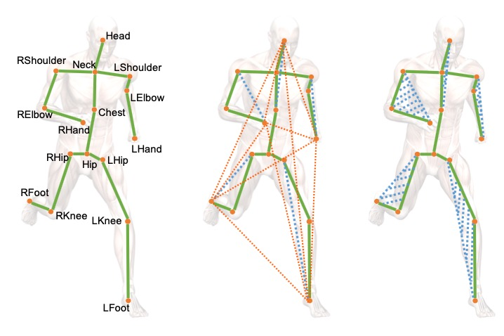
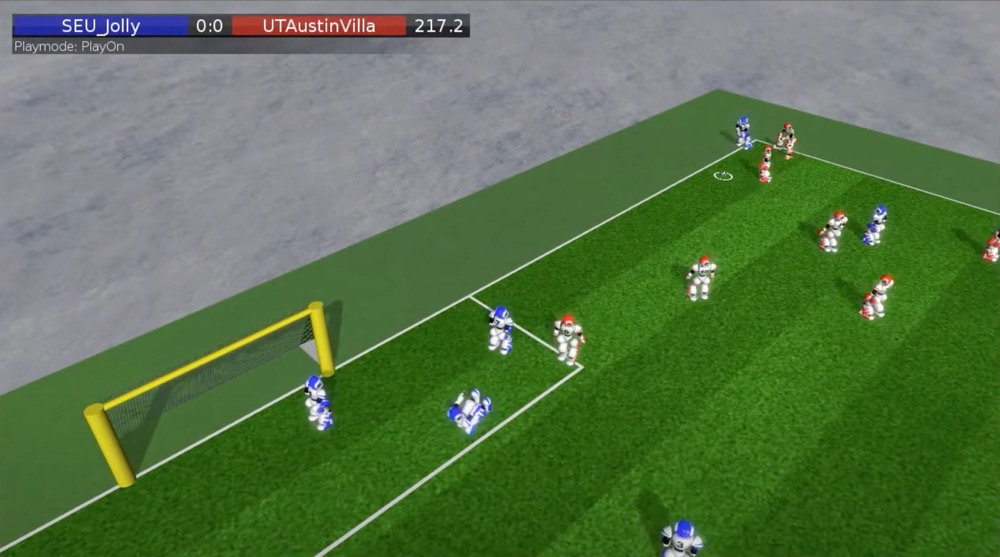

Project
Remain develop

On Geometric Features for Skeleton-Based Action Recognition Using Multilayer LSTM Networks
Songyang Zhang, Xiaoming Liu, Jun Xiao
WACV 2017
[PDF]
[Code]
[Bibtex]
@InProceedings{Zhang_2017_geometric,
author = {Zhang, Songyang and Liu, Xiaoming and Xiao, Jun},
title = {On Geometric Features for Skeleton-Based Action Recognition Using Multilayer LSTM Networks},
booktitle = {WACV},
year = {2017}
}
Fusing Geometric Features for Skeleton-Based Action Recognition using Multilayer LSTM Networks
Songyang Zhang,Yang Yang, Jun Xiao, Xiaoming Liu, Yi Yang, Di Xie, Yueting Zhuang
TMM 2018
[PDF]
[Bibtex]
@article{zhang2018fusing,
title={Fusing geometric features for skeleton-based action recognition using multilayer LSTM networks},
author={Zhang, Songyang and Yang, Yang and Xiao, Jun and Liu, Xiaoming and Yang, Yi and Xie, Di and Zhuang, Yueting},
journal={IEEE Transactions on Multimedia},
volume={20},
number={9},
pages={2330--2343},
year={2018},
publisher={IEEE}
}

Robocup 3D Simulation
Core member of SEU-Jolly team
Robocup China Open 2014 [Champion]
Robocup 2014 [Quarter-finals]
Internship
Facebook AI Research (FAIR), Menlo Park, CA
Jan 2022 - Aug 2022. Mentor: Xi Yin
Project: Multimodal Generation
Tencent AI Lab, Bellevue, WA
Sep 2021 - Dec 2021. Mentor: Linfeng Song,
Lifeng Jin,
Kun Xu
Project: Unsupervised Grammar Induction
 Microsoft, Redmond, WA
Microsoft, Redmond, WA
May 2021 - Aug 2021. Mentor: Quanzeng You, Jiang Wang
Project: Moment Localization with Natural Language
Tencent AI Lab, Bellevue, WA
May 2020 - Aug 2020. Mentor: Linfeng Song,
Lifeng Jin,
Kun Xu
Project: Unsupervised Grammar Induction
Microsoft Research Asia (MSRA), Beijing, China
May 2019 - Aug 2019. Mentor: Houwen Peng, Jianlong Fu
Project: Moment Localization with Natural Language
Tencent AI Lab, Shenzhen, China
Mar 2018 - Aug 2018. Mentor: Lin Ma, Linchao Bao
Project: Temporal Action Localization
Service:
Conference Reviewer: ACMMM 2021, ACMMM 2022
Journal Reviewer: TPAMI, IJCV, TMM, TIP, Neural Computing